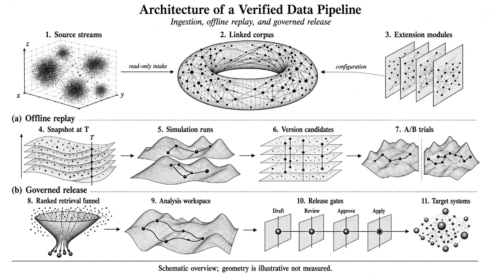
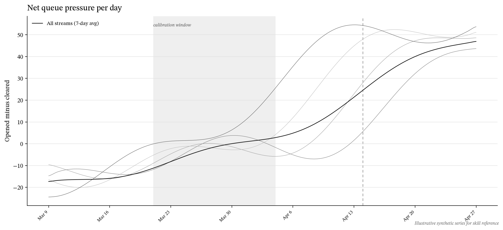

Engraved figures — reference showcase
Bundled references: one landscape plate and one net-metric chart. Cyclic/redacted posters follow poster direction — no poster image ships with this skill.
One sheet · wireframe plate

Chart · net metric + combined average

scripts/generate-reference-chart.py.